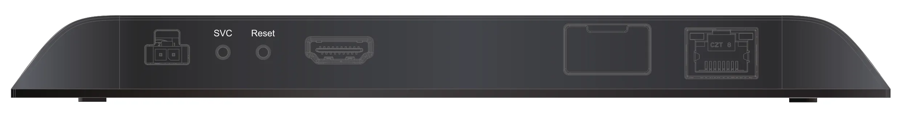

何を繰り返し流す？
案内映像、展示コンテンツ、表示の時間割を整理。
映像をつなぐ・整える ↗EQUIPMENT / 23
サイネージプレーヤー
展示や案内の映像を、決めた画面へ届ける。
KEY SPECIFICATIONS
 画像を大きく見る ＋
画像を大きく見る ＋01 / ROLE & FLOW

画像を拡大 ↗画面の入力端子と表示形式を合わせます。USB端子のあるXD1036とは背面構成が異なるため、必要な接続から機種を選びます。
02 / BEFORE YOUR BRIEF
案内映像、展示コンテンツ、表示の時間割を整理。
HDMI出力は1系統。デュアルデコードと2画面出力は別。
ローカル更新か、ネットワークを使う運用かを決める。
03 / CHOOSING THE RIGHT TOOL
展示会・館内案内などで、用意したコンテンツを画面へ再生する用途に。ライブのカメラ切り替えを行うスイッチャーとは役割が異なります。
XD1036のUSB-A/USB-C/シリアル端子は、XD236にはありません。XD235など旧世代の仕様とも区別します。
XD6シリーズのXD236です。4K10bit60pのデュアルデコード、HTML5、4K回転表示に対応。1本のHDMI出力へ、コンテンツを組み合わせて出す機器です。コンテンツ作成・配信のAuthor、機器管理のControlと、有料Plusプランの提供範囲を分けて運用を選びます。ネットワーク・クラウド契約の設定や費用は、明細に分けて載せます。
画面の台数と型式、素材形式、縦横の向き、表示時間、更新方法、ネットワーク、記録メディア・電源・ソフト契約の範囲をお聞かせください。本体・周辺機材・搬入出・設営・本番操作・撤去を分けて、必要な範囲を整理します。
04 / RELATED EQUIPMENT